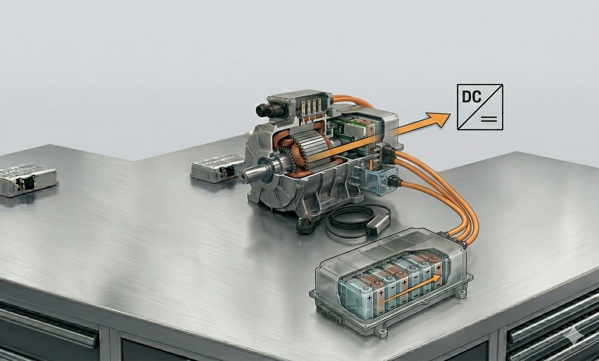
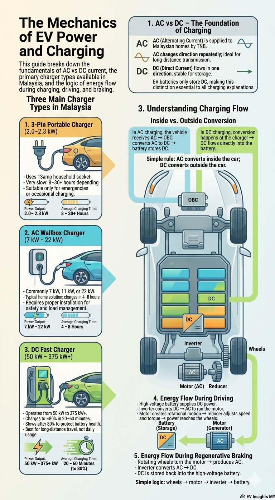

When discussing electric vehicles with customers, clarity matters more than complexity. Module 4 focuses on the fundamental logic behind current, charging, and energy flow—presented not as engineering theory, but as practical knowledge that enhances your role as a Sales Advisor. Customers do not expect you to be an electrical engineer. What they expect is confidence, structure, and the ability to explain EV charging in a way that eliminates confusion. When customers ask about current types, charging speeds, or how energy moves through the vehicle, they are not merely seeking information—they are assessing your understanding.

To explain EV charging effectively, you must first master one simple but critical distinction: the difference between Alternating Current (AC) and Direct Current (DC). AC is the type of electricity delivered to homes and buildings. In Malaysia, the electricity supplied by TNB is AC, which continuously changes direction and is highly efficient for longdistance power transmission. DC, on the other hand, flows in only one direction. Because of its stability, DC is suitable for storage. EV batteries can only store DC electricity. This single fact explains why EV charging works the way it does—and why the distinction between AC and DC becomes the foundation of every charging discussion. Without this understanding, your explanations may appear superficial.

Once the difference between AC and DC is clear, the conversation on charger types becomes far easier. In Malaysia, three primary charging solutions are used today: the 3pin portable charger, the AC wallbox charger, and the DC fast charger. Each serves a different purpose, and your responsibility as a Sales Advisor is to position them accurately based on the customer’s lifestyle and usage patterns.
The 3pin portable charger uses a standard 13amp household socket and typically produces between 2.0 and 2.3 kW of power. Because the power output is low, charging is slow. A full charge may take anywhere from eight hours to over thirty hours, depending on the battery capacity. It is suitable for occasional or emergency charging, but not ideal for daily reliance. If a customer plans to depend solely on a 3pin charger, it is your responsibility to question whether that aligns with their driving habits and convenience expectations.
The AC wallbox charger represents the practical longterm solution for home charging. Operating at common Malaysian power levels such as 7 kW, 11 kW, or 22 kW, the wallbox can typically recharge an EV within four to eight hours, making it ideal for overnight charging. Professional installation is essential, ensuring safety and proper load allocation within the home. As a Sales Advisor, the conversation is not only about charging speed—it's about integrating the wallbox into the customer’s daily routine, showing how it enhances convenience and supports longterm ownership.
DC fast chargers operate at far higher power levels—typically between 50 kW and 375 kW or more. These chargers can replenish an EV battery to around 80 percent within 20 to 60 minutes. Charging slows down after 80 percent to protect battery health. DC chargers are ideal for longdistance travel and public convenience, but they are not intended to replace everyday home charging. Presenting DC charging as “always better” oversimplifies the concept and weakens credibility. Customers expect a more nuanced explanation, one that reflects an understanding of battery protection and daily charging needs.

Understanding charger types naturally leads to understanding charging flow. When using AC charging—whether via a 3pin charger or a wallbox—the vehicle receives AC power. Since the highvoltage battery only accepts DC, conversion must occur inside the vehicle. This conversion is performed by the OnBoard Charger (OBC), which transforms AC electricity into DC before directing it into the battery.
In DC fast charging, the conversion occurs externally within the charging station. The station delivers DC power directly to the battery, bypassing the vehicle’s OBC. The difference is simple yet crucial: AC charging converts inside the car, while DC charging converts outside the car. When you can explain this with confidence, customers immediately recognize your understanding.
Charging, however, is only one half of the energy story. Customers increasingly want to know what happens when the car is in motion. In drive mode, the highvoltage battery releases DC electricity. Yet the electric motor operates on AC. This is where the inverter becomes essential. The inverter converts DC into AC, enabling the motor to function efficiently. The motor then transforms this electrical energy into rotational mechanical energy, powering the vehicle. The reducer steps in next, lowering the motor’s high rotational speed and converting it into usable torque before sending it to the wheels. In its simplest form, the energy path is easy to describe: from battery to wheels.
Regenerative braking completes the system. Instead of wasting kinetic energy as heat during deceleration, EVs recover a portion of it. When the driver releases the accelerator or applies the brake, energy flow reverses. The rotating wheels turn the electric motor, which now operates as a generator producing AC electricity. This AC power travels back through the inverter, which converts it into DC before storing it in the highvoltage battery. This process increases efficiency, reduces brake wear, and improves driving range. Put simply: energy flows from wheels back to battery.
Across charging, driving, and regenerative braking, the same guiding principle emerges. The battery stores DC. The motor operates on AC. The inverter manages the conversion between the two. Energy flows forward during acceleration and reverses during regeneration. Once you internalize this framework, EV technology becomes coherent rather than complicated.
Clarity builds confidence. Confidence builds trust. And trust is what transforms a Sales Advisor into a reliable expert in the rapidly expanding world of electric mobility.

Apabila berbincang tentang kenderaan elektrik dengan pelanggan, kejelasan jauh lebih penting daripada penerangan yang terlalu kompleks. Modul 4 memberi fokus kepada logik asas di sebalik arus elektrik, pengecasan, dan aliran tenaga — bukan sebagai teori kejuruteraan, tetapi sebagai pengetahuan praktikal yang membantu anda menjalankan peranan sebagai Sales Advisor dengan lebih baik. Pelanggan tidak mengharapkan anda menjadi jurutera elektrik. Apa yang mereka harapkan ialah keyakinan, penerangan yang tersusun, dan keupayaan untuk menjelaskan proses pengecasan EV dengan cara yang mudah difahami. Apabila pelanggan bertanya tentang jenis arus, kelajuan pengecasan, atau bagaimana tenaga bergerak dalam kenderaan, mereka bukan sekadar mencari maklumat — mereka juga menilai tahap pemahaman anda.
Untuk menerangkan pengecasan EV dengan jelas, anda perlu terlebih dahulu memahami satu perbezaan yang sangat penting: perbezaan antara Alternating Current (AC) dan Direct Current (DC). AC ialah jenis elektrik yang dibekalkan ke rumah dan bangunan. Di Malaysia, bekalan elektrik yang disalurkan oleh :contentReference[oaicite:0]{index=0} adalah dalam bentuk AC, yang sentiasa bertukar arah dan sangat efisien untuk penghantaran elektrik jarak jauh. DC pula mengalir dalam satu arah sahaja. Disebabkan kestabilannya, DC lebih sesuai untuk penyimpanan tenaga. Bateri EV hanya boleh menyimpan elektrik dalam bentuk DC. Fakta ini menjelaskan mengapa proses pengecasan EV berfungsi seperti yang kita lihat hari ini — dan mengapa perbezaan antara AC dan DC menjadi asas kepada semua perbincangan tentang pengecasan. Tanpa pemahaman ini, penerangan yang diberikan mungkin kelihatan terlalu ringkas atau kurang tepat.
Apabila perbezaan antara AC dan DC sudah jelas, penerangan tentang jenis pengecas akan menjadi lebih mudah difahami. Di Malaysia, terdapat tiga jenis penyelesaian pengecasan utama yang digunakan hari ini: pengecas mudah alih 3-pin, pengecas wallbox AC, dan pengecas pantas DC. Setiap satu mempunyai fungsi yang berbeza, dan sebagai Sales Advisor, tanggungjawab anda ialah menerangkannya dengan tepat berdasarkan gaya hidup dan corak penggunaan pelanggan.
Pengecas mudah alih 3-pin menggunakan soket rumah standard 13 amp dan biasanya menghasilkan kuasa sekitar 2.0 hingga 2.3 kW. Oleh kerana kuasanya rendah, proses pengecasan menjadi lebih perlahan. Untuk mengecas penuh, ia boleh mengambil masa antara lapan jam hingga lebih daripada tiga puluh jam bergantung kepada kapasiti bateri. Ia sesuai digunakan untuk pengecasan sekali-sekala atau dalam situasi kecemasan, tetapi kurang praktikal jika digunakan sebagai kaedah pengecasan harian. Jika pelanggan bercadang untuk bergantung sepenuhnya kepada pengecas 3-pin, anda perlu membantu mereka menilai sama ada pilihan itu sesuai dengan tabiat pemanduan dan keperluan harian mereka.
Pengecas wallbox AC pula merupakan penyelesaian yang lebih praktikal untuk penggunaan jangka panjang di rumah. Dengan tahap kuasa biasa di Malaysia seperti 7 kW, 11 kW atau 22 kW, wallbox biasanya boleh mengecas EV sepenuhnya dalam tempoh sekitar empat hingga lapan jam. Ini menjadikannya sangat sesuai untuk pengecasan semalaman. Pemasangan secara profesional adalah penting bagi memastikan keselamatan dan pengagihan beban elektrik yang betul di rumah. Sebagai Sales Advisor, perbincangan bukan hanya tentang kelajuan pengecasan — tetapi juga tentang bagaimana wallbox boleh disesuaikan dengan rutin harian pelanggan dan menjadikan pemilikan EV lebih mudah dalam jangka masa panjang.
Pengecas pantas DC beroperasi pada tahap kuasa yang jauh lebih tinggi — biasanya antara 50 kW hingga 375 kW atau lebih. Dengan kuasa ini, bateri EV boleh dicas sehingga sekitar 80 peratus dalam tempoh 20 hingga 60 minit. Selepas 80 peratus, kadar pengecasan akan menjadi lebih perlahan untuk melindungi kesihatan bateri. Pengecas DC sangat sesuai digunakan untuk perjalanan jarak jauh atau kemudahan pengecasan awam, tetapi ia tidak direka untuk menggantikan pengecasan harian di rumah. Menggambarkan pengecasan DC sebagai “sentiasa lebih baik” adalah terlalu ringkas dan boleh menjejaskan kredibiliti. Pelanggan biasanya mengharapkan penerangan yang lebih seimbang, termasuk faktor penjagaan bateri dan keperluan pengecasan harian.
Memahami jenis pengecas secara semula jadi membawa kepada pemahaman tentang aliran pengecasan. Apabila menggunakan pengecas AC — sama ada melalui pengecas 3-pin atau wallbox — kenderaan menerima tenaga dalam bentuk AC. Oleh kerana bateri voltan tinggi hanya menerima DC, proses penukaran perlu berlaku di dalam kenderaan. Penukaran ini dilakukan oleh On-Board Charger (OBC), yang menukar elektrik AC kepada DC sebelum menyalurkannya ke dalam bateri.
Dalam pengecasan pantas DC pula, proses penukaran berlaku di luar kenderaan, iaitu di stesen pengecasan itu sendiri. Stesen tersebut menghantar tenaga DC terus ke bateri tanpa melalui OBC dalam kenderaan. Perbezaannya mudah tetapi penting: pengecasan AC menukar tenaga di dalam kereta, manakala pengecasan DC menukar tenaga di luar kereta. Apabila anda dapat menerangkan perkara ini dengan yakin, pelanggan akan lebih mudah melihat bahawa anda benar-benar memahami sistem tersebut.
Pengecasan hanyalah satu bahagian daripada keseluruhan aliran tenaga dalam EV. Pelanggan juga semakin berminat untuk mengetahui apa yang berlaku apabila kereta sedang dipandu. Dalam mod pemanduan, bateri voltan tinggi melepaskan tenaga dalam bentuk DC. Namun motor elektrik beroperasi menggunakan AC. Di sinilah inverter memainkan peranan penting. Inverter menukar tenaga DC kepada AC supaya motor boleh berfungsi dengan cekap. Motor kemudian menukarkan tenaga elektrik ini kepada tenaga mekanikal berputar untuk menggerakkan kenderaan. Selepas itu, reducer akan menurunkan kelajuan putaran motor yang tinggi dan menukarkannya kepada tork yang sesuai sebelum dihantar ke roda. Secara ringkasnya, aliran tenaga boleh digambarkan sebagai perjalanan dari bateri ke roda.
Brek regeneratif melengkapkan keseluruhan sistem ini. Daripada membazirkan tenaga kinetik sebagai haba ketika memperlahankan kenderaan, EV boleh mendapatkan semula sebahagian tenaga tersebut. Apabila pemandu melepaskan pedal minyak atau menekan brek, aliran tenaga akan berbalik. Roda yang berputar akan memutarkan motor elektrik yang kini bertindak sebagai generator dan menghasilkan elektrik dalam bentuk AC. Tenaga AC ini akan melalui inverter, ditukar semula kepada DC, dan kemudian disimpan kembali ke dalam bateri voltan tinggi. Proses ini meningkatkan kecekapan tenaga, mengurangkan kehausan brek, dan membantu menambah jarak pemanduan. Secara mudahnya: tenaga bergerak dari roda kembali ke bateri.
Dalam pengecasan, pemanduan, dan brek regeneratif, prinsip asasnya tetap sama. Bateri menyimpan tenaga dalam bentuk DC. Motor menggunakan tenaga dalam bentuk AC. Inverter mengurus penukaran antara kedua-duanya. Tenaga bergerak ke hadapan semasa pecutan dan bergerak semula ke bateri semasa regenerasi. Apabila anda memahami rangka kerja ini, teknologi EV akan kelihatan lebih logik dan mudah difahami.
Kejelasan membina keyakinan. Keyakinan membina kepercayaan. Dan kepercayaan itulah yang menjadikan seorang Sales Advisor sebagai pakar yang boleh dipercayai dalam dunia mobiliti elektrik yang semakin berkembang.